CSE 8803: Applied Natural Language Processing
Table of Contents
- 1. Week 1: Text data preprocessing + Course Intro
- 2. Week 2: (Discrete) Text Representations
- 3. Week 3: Linear Text Classification
- 4. Week 5: Log Regression, SVM and Perceptron (Module 4)
- 4.1. Logistic Regression
- 4.1.1. Generative vs Discriminative Models (again)
- 4.1.2. Bayes equation again
- 4.1.3. Logistic Function for posterior probability
- 4.1.4. Sigmoid is interpreted as probability
- 4.1.5. Logistic regression model
- 4.1.6. The gradient of \(l(\theta)\)
- 4.1.7. Gradient descent
- 4.1.8. Gradient ascent (concave) / descent (convex) algorithm
- 4.1.9. Advantages and disadvantages of logistic regression
- 4.2. Support vector machine
- 4.3. Perceptron
- 4.1. Logistic Regression
- 5. Week 6: Embeddings/Dimensionality reduction
- 5.1. SVD and Co-occurrence Embeddings
- 5.1.1. Motivating example
- 5.1.2. Bag of words representation
- 5.1.3. What is dimensionality reduction?
- 5.1.4. Intuition (of PCA)
- 5.1.5. Singular value decomposition
- 5.1.6. Co-occurrence matrices
- 5.1.7. SVD on co-occurrence matrices
- 5.1.8. Dense word embeddings
- 5.1.9. Advantages of dense word embeddings
- 5.2. GloVe
- 5.1. SVD and Co-occurrence Embeddings
- 6. Week 8: Neural Networks and Word2Vec
- 6.1. Neural Networks
- 6.2. Word2Vec, CBOW and Skipgram
- 6.2.1. Review of One-Hot Encoding
- 6.2.2. Issues with One-Hot Embedding
- 6.2.3. Contextual meaning of the words
- 6.2.4. What do we want to achieve from word embeddings?
- 6.2.5. Algorithm 1:: Continuous Bag of Words (CBOW)
- 6.2.6. Algorithm 2: Skip-Gram model
- 6.2.7. Main differences between CBOW and Skip-gram
- 7. Week 9: Convolutional Neural Networks and Recurrent Neural Networks
- 8. Week 10: Long-Short Term Memory and Gated Recurrent Units
1. Week 1: Text data preprocessing + Course Intro
1.1. Why ANLP?
- Text and docs are everywhere
- Hundreds of languages in the world
- Primary information artifacts
- Large volumes of textual data
- Big and small companies looking for this skill
1.2. Lots of text and written information
- Internet
- Webpages, Facebook, Wikipedia, etc.
- Digital libraries: Google Books, ACM, IEEE
- Lyrics, subtitles, etc.
- Police case reports
- Legislation
- Reviews
- Medical reports
- Job descriptions
1.3. Example applications of NLP
- Establish authenticity, detect plagiarism
- Classification of genres
- Classification of tone; sentiment analysis
- Syntax analysis in code
- Machine translation
1.4. Challenges of NLP
- Interdisciplinary field
- Ambiguity at many levels of language:
- Lexical (Word level)
- Syntactic: different ways of parsing
- Partial information: e.g., how to interpret pronouns
- Contextual information: context of sentence may affect meaning of sentence
1.5. Class overview
- Preprocessing:
- Clean text and documents
- Tokenization
- Reducing inflectional forms of a word:
- Stemming
- Lemmatization
- Normalization
- Text representation
- One hot encoding
- Bag of words (Frequency counting)
- Term frequency-Inverse document frequency (TF-IDF)
- Embeddings
- Overview of classification methods
- Naive Bayes
- Logistic regression
- SVM
- Perceptron
- Nerual Network
- Overview of Deep Learning
- Convolutional neural network
- Recurrent neural network
- Long short-term memory
- Overview of topic modelling
- Principal component analysis
- Singular value decomposition
- Latent Dirichlet Allocation
- Overview of Transformer methods
- Bidirectional Encoder Representations from Transformers
- Generative Pre-trained Transformers (GPT)
1.6. Deliverables
1.6.1. Homework
- HW1: Text preprocessing and classification intro
- HW2: Classification methods, dimensionality reduction, SVD
- HW3: Deep learning
- HW4: Transformers and unsupervised methods
1.6.2. Quizzes (10)
- Measure understanding of topic
- Mostly conceptual questions
- MCQ
- Limited time to do the test
- Mandatory
1.7. Course goals
- Demonstrate how to pre-process textual data
- Differentiate text representation methods and techniques
- Explain different NLP tasks
- Develop and assess performance of different NLP models using a variety of techniques
1.8. Text Preprocessing Techniques
1.8.1. Terminology
- Corpus
- collection of text, e.g. Yelp reviews, Wikipedia articles
- Syntax
- Grammatical structure of text
- Syntactic parsing
- process of analyzing natural language with grammatical rules
- Semantics
- meaning of text
- Tokenization
- splitting long pieces of text into smaller pieces (tokens). e.g.:
This is a simple sentence->["This", "is", "a", "simple", "sentence"] - Stop words
- commonly used words, e.g. "the", "a", "an", "is", "are". Do not contribute to overall meaning
- N-grams
- consecutive sequence of words (commonly: 2-5) in a text. 1-gram (unigram), 2-gram (bigram), 3-gram (trigram). Example of bigrams:
"This is", "is a", "a simple", "simple sentence"
1.8.2. Preprocessing text data
- Text is unstructured, so preprocessing is the first step to prepare and clean text data to perform a NLP task
- Useful libraries:
- re: regular expressions
- nltk: natural language toolkit
- Common steps:
- Noise removal
- Tokenization
- Text normalization
1.8.3. Noise removal
Removal of unwanted text formatting information, e.g.:
- Punctuation
- Accent marks
- Special characters
- Numeric digits (could be replaced with words)
- Leading, ending and vertical whitespace
- HTML formatting
Example: This is a 'simple'' sentence !!! 1+ \n -> This is a simple sentence
1.8.4. Tokenization
Example:
This is a simple sentence ->
['This', 'is', 'a', 'simple', 'sentence', '.']
1.8.5. Text normalization
Removing variations in the text to bring it to a standard form.
- Case: Convert all letters to upper or lower case
- Removing stop words, sparse terms, other special / particular words.
Example of text normalization:
This is a Simple SenTence ->
simple sentence
- Stemming: reduce words to word stem, base, or root form.
Example:
There are several tytpes of stemming algorithms->there are sever type fo stem algorithms. - Lemmatization: similar to stemming. Reduces inflectional forms to a common base form, the lemma. Does not simply chop off inflections. Uses lexical knowledge to get the correct base form of words.
Example:
There are several tytpes of stemming algorithms->There are several type of stemming algorithms.
2. Week 2: (Discrete) Text Representations
2.1. Why?
- NLP
- design algorithms to allow computers to understand natural language, so as to perform some task
- Required
- convert text data to numerical data that can be used in model
2.2. Representing Words
- Can be represented by vectors of 0 & 1 where 1 indicates the position of the word, e.g. lorem =
[1, 0], ipsum =[0, 1], etc.
2.3. Representing sentences/documents
- Vectors of vectors eg
[[1,0], [0,1]]
2.4. One Hot Encoding
2.4.1. Definitions
- corpus
- all texts
- vocabulary, V
- all unique words
- vocabulary size, d
- number of unique words, "dimensions"
- word, w
- represented by vector \(X\)
\(X^w_i\) = 1 if idw(w) = 1, 0 otherwise
- document
- represented by matrix sized \(n \times d\)
- n
- number of words in document
- d
- a single vector with multiple values of 1 where vocab. words are present
- Document, D
- e.g. this is a sentence
- Vocabulary, V
- e.g.
[aardvark, ..., sentence, ..., zither] - OHE, \(X^D\)
[0, ..., 1, ...1]
2.4.2. Advantages and disadvantages
- Advantages: easy to implement
- Disadvantages:
- not scalable for large vocabulary
- high dimensional sparse matrix results in expensive memory + computation
each word represented individually, hence no notion of similarity or meaning. All vectors are orthogonal
\((w^{good})^T \cdot w^{great} = (w^{good})^T \cdot w^{bad} = 0\)
2.5. Bag of Words (Frequency Counting)
- Summary
- Represents each document as a bag of words. Ignores order of words.
- Document
- a column vector of \(X\) word counts
- Representation
- Fixed-length representation
- Document, D
- e.g.
It was the best of times, it was the worst of times - Vocabulary, V
- e.g.
[aardvark, ..., zither] - Bag of words: X
- [2, …, 1]
- Size of X
- \(1 \times d\) (\(d\) = vocabulary size)
Hence \(n\) documents can be represented by matrix of size \(n \times d\).
2.5.1. Advantages and disadvantages
- Advantages: easy to implement
- Disadvantages:
- Not scalable for large vocabulary
- high dimensional sparse matrix results in expensive memory + computation
- Order of words is disregarded; no meaning from context
2.6. TF-IDF (Term Frequency-Inverse Document Frequency)
2.6.1. Why needed?
- BoW does not provide logical importance
- i.e., each word is equally important
- TF-IDF assigns more logical importance to words in each document
2.6.2. What is TF-IDF and when to use TF-IDF
- Definition of TF-IDF
- a word's importance score in a document among \(N\) documents
- N
- total number of documents
- Word count
- likely TF-IDF
- Term frequency, TF
- the number of times a word appears in a document. TF is high if word appears many times in document, e.g. the, a, etc.
- Inverse document frequency, IDF
- \(\log(\frac{N}{\text{number of docs containing the term}})\). If all (or most) documents contain that term, then IDF will be very small
- Word's importance score
- \(TF \times IDF\). Higher score = more "characteristic"
2.6.3. Advantages and disadvantages
- Advantages:
- Easy to implement
- Higher score = "more characteristic". Common words will have very small scores.
- Good technique to search for documents, find similar documents, cluster documents
- Disadvantages
- Does not consider position of words when creating matrix. Similar problem as with BoW.
3. Week 3: Linear Text Classification
3.1. Classification introduction
Note: classification.
3.1.1. Supervised learning: definitions
- Word count matrix / document term matrix
- dataset generated from documents
- Rows of matrix
- each row is 1 document
- Columns of matrix
- each column is 1 unique word
- Unique words: synonyms
- features, dimensions, attributes, variables, columns
- Documents: synonyms
- rows, data points, instances
- Model weights
- = model parameters, i.e. what the model learns
- Function \(F\)
- maps \(X\) to \(Y\)
- Training data \((x_i, y_i)\)
- within set of \({X \times Y}\)
- Learning - find \(\hat{f}\)
- \(\hat{f} \in F\) s.t. \(y_i \approx \hat{f} (x_i)\)
- New data
- \(x\)
- Prediction \(y\)
- \(= \hat{f} (x)\)
Supervised learning thus takes labelled training data and learns or derives a function \(f(x): y = f(x)\).
3.1.2. Categories of supervised learning
- continuous \(y\)
- regression i.e. curve fitting
- discrete \(y\)
- classification i.e. class estimation
3.1.3. Regression
- Errors represent how much predictions deviate from actual values.
- Minimum error = 0, however beware of overfitting, where test errors will be high (trained model cannot generalize).
- Example: apartment rent prediction, stock price prediction (difficult due to many predictors, known and unknown).
3.1.4. Classification
- Linear classification can be used for spam detection, sentiment analysis, handwriting digit recognition (0.4% error here), etc.
- Prepare, clean data, fit a classifier
- Retraining is required due to new evolving context, new lingo, etc. Can be implemented into a learning system.
3.2. Naive Bayes
3.2.1. Method / concepts
Bayes Decision Rule.
- \(x\)
- encoded document, e.g. by BoW
- \(y\)
- label of document, i.e. whether document contains positive or negative message
- Posterior
- \(P(y|x)\)
- Likelihood
- \(P(x|y)\)
- Prior
- \(P(y)\)
- Normalization constant
- \(P(x)\)
\[ P(y|x) = \frac{P(x|y)P(y)}{P(x)} = \frac{P(x,y)}{\sum_y P(x,y)} \]
3.2.2. Bayes decision rule
- important: normalization constant is the same for +ve and -ve labels, hence no need to calculate when predicting sentiment
3.2.3. Generative vs discriminative models
Naive Bayes is a generative model
- Generative model: able to generate synthetic data points
- Need to model prior and likelihood distributions.
- In Naive Bayes, we normally replace likelihood with the conditional distribution.
- Conditional distribution is the pdf/pmf to generate data points.
- Determining this distribution might be difficult.
- Generative models e.g.: Naive Bayes, Hidden Markov Models
- Discriminative models:
- Directly estimate posteriors
- No need to model prior and likelihood distributions
- e.g.: logistic regression, SVM, neural networks
3.2.4. Details of Naive Bayes
Bayes decision rule: \[ P(y|x) = \frac{P(x|y)P(y)}{P(x)} \]
- assumption: all dimensions (unique words) are independent of each other, i.e. \(p(x|y = 1)\) fully factorized, hence: \(P(x|y=1) = \prod^d_{i=1} P(x_i|y = 1)\)
- Thus, likelihood can be written in fully factorized way.
- It becomes a big joint probability of all unique words (dimensions).
- Conditional independence, hence likelihood can be written as multiplication of every dimension given the label.
- i.e., the variables corresponding to each dimension are independent given the label.
3.2.5. Naive Conditional Independence Assumption
\[ P(y|x) = \frac{P(x|y)P(y)}{P(x)} \]
For vocabulary \(V\), [nice, give, us, this, iu, ssn, information, job, a]
\(P(\text{document} | y = \text{positive})P(y=\text{positive})\)
= \(P(x=\text{nice}) ... P(x=a|y=\text{positive})\) \(\cdot P(y= \text{positive})\)
similarly for negatives:
\(P(\text{document} | y = \text{negative})P(y=\text{negative})\)
= \(P(x=\text{nice}) ... P(x=a|y=\text{negative})\) \(\cdot P(y= \text{negative })\)
- Representing the likelihood
Common distribution: multinomial distribution.
\[ P(x=\text{nice} | y = \text{positive}) \]
\[ = \frac{\text{count of word }\textbf{nice} \text{ in all positive label docs }}{\text{count all words with } \textbf{positive} \text{ labels}} \]
Then to calc priors:
\[ P(y = \text{positive}) = \frac{\text{count # +ve docs}}{\text{count # all docs}} \]
Repeat above for negatives.
3.2.6. Advantages and disadvantages
- Advantages
- Simple, easy to implement
- No training required
- Good results in general
- Disadvantages
- Position of words do not matter (no semantic meaning) due to BoW approach
- Requires / assumes conditional independence
3.3. Classification Model Evaluation
3.3.1. Common metrics
- Classification: accuracy, precision, recall, cross-entropy, perplexity, and F1 score
- Regression: MSE, MAE
3.3.2. Confusion matrix
- e.g. for multi-label confusion matrix
- rows are the actual classes (sport, news politics)
- columns are the predicted classes
- diagonal elements are number of accurate predictions
- off-diagonals: inaccurate predictions
- But difficult to parse, can consider using a heat map on the confusion matrix instead of raw #
- meaning of positive and negative in a confusion matrix: not related to sentiment. Only indicator of the label, e.g. sport = positive, news = negative.
3.3.3. Accuracy
- Accuracy = (True Positive + True Negative) / Total observations, i.e. sum of diagonals / count observations.
- May not be represent "goodness" since false positives and false negatives have identical treatment.
- FP and FN may be important specifically for some fields e.g. medicine.
- Another metric, false alarm (false positive, type I error) is easy to remember in security contexts.
3.3.4. RoC-AUC curve
- ROC: Receiver Operating Characteristic
- Changing thresholds: how to change, what should the new threshold be?
- TP (y-axis) vs FP (x-axis)
- AUC (area under the curve) represents the how performant the predictive model is. Max is 1.0.
- But 0.9 may not be good either.
- Are there some thresholds where TP = 0? Are these important in the context?
4. Week 5: Log Regression, SVM and Perceptron (Module 4)
4.1. Logistic Regression
- Backbone of neural network model
- Created on linear combination of features
- Outputs a probability
- Logistic regression is thus a soft classification
4.1.1. Generative vs Discriminative Models (again)
- Generative model: able to generate synthetic data points
- Need to model prior and likelihood distributions.
- Conditional distribution is the pdf/pmf to generate data points.
- Determining this distribution might be difficult.
- Generative models e.g.: Naive Bayes, Hidden Markov Models (HMM)
- Discriminative models:
- Directly estimate posteriors
- No need to model prior and likelihood distributions
- e.g.: logistic regression, SVM, neural networks
4.1.2. Bayes equation again
\[ P(y|x) = \frac{P(x|y)P(y)}{P(x)} = \frac{P(x,y)}{\sum_y P(x,y)} \]
- Generative models
- need to calculate likelihood and prior explicitly
- Discriminative models
- can we calculate posterior directly without using Bayes equation?
4.1.3. Logistic Function for posterior probability
i.e. the following function
\[ P(y|x) = g(s) = \frac{e^s}{1+e^s} = \frac{1}{1+e^{-s}} \]
- This function is known as the sigmoid function.
- Easy to use this for optimization
- Threshold: always 0.5?
- Threshold can be investigated with ROC-AUC to determine best threshold
- Neural network with just 1 block is similar to logistic regression
- Logistic regression: sigmoid is the activation function

- Three linear models with different activation functions
- Using a sine activation function: it will be transformed to perceptron, a hard classification
4.1.4. Sigmoid is interpreted as probability
e.g., does a customer like a product based on feedback?
- Input: \(x\) a BoW or TF-IDF of a document that contains customer's feedback
- \(g(s)\) is the probability of whether a customer likes a product
- Cannot have hard prediction or classification here
- Sigmoid is the inverse of logit function (or the log-odds ratio)
4.1.5. Logistic regression model
- Expanding equation and replacing \(g(s)\) with linear combination of features
- Probabilistic model
- Uses MLE to optimize linear combination of features
- Use log-likelihood for better numerical stability
To find θ parameters, for \(n\) data points:
\begin{equation} P(y|x) = \begin{cases} \frac{1}{1+ \exp(-x\theta)} & y=1 \\ 1-\frac{1}{1+\exp(-x\theta)} = \frac{\exp(-x\theta)}{1+\exp(-x\theta)} & y=0 \end{cases} \end{equation}
4.1.6. The gradient of \(l(\theta)\)
\[ l(\theta) := \log \prod^n_{i=1} p(y_i, |x_i, \theta) \\ = \sum_i \theta^T x_i^T (y_i -1) - \log(1+\exp(-x_i \theta)) \] Gradient: \[ \frac{\partial l(\theta)}{\partial \theta} = \sum_i x_i^T (y_i-1) + x_i^T \frac{\exp(-x_i \theta)}{1+\exp(-x_i \theta)} \]
- Even when set to 0, there is no closed-form solution.
- Even though there is a global solution
- Unlike linear regression where there is a closed-form solution
- Hence, logistic regression is unconstrained, but
- Can optimize using iterative approach such as gradient descent
4.1.7. Gradient descent
- One way to solve unconstrained optimization problem is gradient descent
- Given initial guess, we iteratively refine the guess by taking the direction of the negative gradient
- Analogous to going down the hill by taking steepest direction at each step
- Update rule \[ x_{k+1} = x_k - \eta_k \nabla f(x_k) \] \(\eta_k\) is the step size or learning rate
- Step taken should be small enough
4.1.8. Gradient ascent (concave) / descent (convex) algorithm
- Initialize parameter \(\theta_0\)
- Do: \[ \theta_{t+1} \leftarrow \theta^t + \eta \sum_i x_i^T (y_i-1) + x_i^T \frac{\exp(-x_i \theta)}{1+\exp(-x_i \theta)} \]
- while: \[ \parallel \theta^{t+1} - \theta^t \parallel > \epsilon \]
- ascent: maximize function
- descent: minimize
- Thus:
- Logical threshold = 0.5, i.e. predict 1 if \(g(s) \ge 0.5\)
4.1.9. Advantages and disadvantages of logistic regression
- Advantages:
- Simple
- No need to model prior or likelihood
- Provides probability output
- Works with datasets with few features
- Disadvantages:
- Needs to have discriminative model assumption
- Model needs to be optimized using numerical approach
- Might not work with complicated dataset
**
4.2. Support vector machine
- SVM is a large margin classifier
4.2.1. Linear separation
- Can have different separating lines, so which line is the best?
- Why is having bigger margin better?
- What θ maximizes margin?

- All cases, error is zero and they are linear, so they are all good for generalization.
- SVM focuses on just one solution (compared to perceptron) and that's the maximum margin solution
- SVM maximizes margin and provides decision line with maximized margin, which is the most stable under perturbations of inputs
4.2.2. Finding θ that maximizes margin
- Objective function created by constructing linear combination of features.
- Solution (decision boundary) of the line \[ x \theta = 0 \]
- Let \(x_i\) be the nearest data point to the line/plane
- Decision boundary is thus \(x\theta + b = 0\)
- Below decision line: ≤ 0
- Above decision line: ≥ 0
- Scaling up / down θ thus allows you to set the nearest point to \(1\).
4.2.3. Length of margin
\[ \text{distance} = \frac{1}{\parallel \theta \parallel} |(x_i \theta - x \theta)| = \frac{1}{\parallel \theta \parallel}|(x_i \theta + b - x\theta -b)| \] where:
- \(x_i \theta + b\)
- my constraint \(\equiv |x_i \theta + b| = 1\)
- \(-x\theta - b\)
- a point on the decision line \(\equiv x\theta + b = 0\)
Therefore total margin is: \(\frac{2}{\parallel \theta \parallel}\) (since there are 2 points on each side of the decision line)

- θ is orthogonal to the decision line
4.2.4. Maximizing margin
- Maximize \(\frac{2}{\parallel \theta \parallel}\) in the objective function
- Subject to \(\min_{i=1,2,...,N} |x_i \theta + b| = 1\) which is the nearest neighbour, sign-agnostic for labels here, hence absolute.
- Hard to optimize this due to the "min" in the constraint (non-convex form)
- To get rid of the absolute value in the constraint, (and to get the correct prediction, predicted value must have same sign as actual) \[ \left|x_i \theta + b\right| = y_i(x_i \theta + b) \rightarrow \text{for correct classification} \\ \text{ if} \min |x_i \theta + b | = 1 \rightarrow \text{ it can be at least 1} \]
- Hence, \[ \max \frac{2}{\parallel \theta \parallel} \\ \text{subject to } y_i (x_i \theta + b) \ge 1 \text{ for } i=1,2,...,N \]
4.2.5. Geometric representation

- Decision line
- \(x\theta + b = 0\)
- Margin line
- \(x \theta + b = 1\)
- Blue colors
- constraint (data points beyond margin line); beyond margin line the margin ≥ 1, correctly classified
- Converting problem
- Many ML libraries can solve minimization problems instead of maximization
- Hence, convert from: \[ \max(\frac{2}{\parallel \theta \parallel}) \\ \text{subject to } y_i (x_i \theta + b) \ge 1 \text{ for }i=1,2,...,N \]
- to: \[ \min(\frac{1}{2} \theta\theta^T) \\ \text{subject to } y_i (x_i \theta + b) \ge 1 \text{ for }i=1,2,...,N \]
4.2.6. Lagrange formulation (not in detail)
\[ \min(\frac{1}{2} \theta\theta^T) \\ \text{subject to } y_i (x_i \theta + b) -1 \ge 0 \\ \textit{L}(\theta, b, \alpha) = \frac{1}{2}\theta\theta^T - \sum^N_{i=1} \alpha_i (y_i(x_i \theta + b)-1) \] becomes: \[ \min \text{w.r.t. } \theta, b \text{ and } \max \text{w.r.t. each } \alpha_i \ge 0 \\ \nabla_\theta L(\theta, b, \alpha) = \theta - \sum^N_{i=1} \alpha_i y_i x_i = 0 \\ \nabla_b L(\theta, b, \alpha) = -sum^N{i=1} \alpha_i y_i = 0 \] under KKT conditions, where:
- \(\theta\)
- model parameter
- \(b\)
- bias term
- \(\alpha\)
- Lagrange multiplier
Need to convert primal form to dual form. Take gradient w.r.t. θ, b, set to 0. Calculate parametric value of θ and new constraints. Convert objective function to dual form. \[ \theta = \sum^N_{i=1} \alpha_i y_i x_i \text{ and } \sum^N_{i=1} \alpha_i y_i = 0 \\ L(\theta, b, \alpha) = \sum^N{i=1} \alpha_i - \frac{1}{2} \theta \theta^T \\ L(\theta, b, \alpha) = \sum^N_{i=1} \alpha_i - \frac{1}{2} \sum^N_{i=1} \sum^N_{j=1} y_i y_j \alpha_i \alpha_j x_i x_j^T \\ \max \text{ w.r.t. each } \alpha_i \ge 0 \text{ for }i=1,...,N \text{ and } \sum^N_{i=1} \alpha_i y_i = 0 \]
4.2.7. Usage
- Dual form good for binary classification, e.g. spam or not spam.
- Training
\[
\theta = \sum^N_{i=1} \alpha_i y_i x_i
\]
- No need to go over all data points
- \[ \rightarrow \theta = \sum_{x \in \text{ SV}} \alpha_i y_i x_i \]
- and for \(b\) pick any support vector, and calculate \(y_i (x_i \theta + b) = 1\)
- Testing
- For new point \(s\), compute: \[ s \theta + b = \sum_{x_i \in \text{ SV}} \alpha_i y_i x_i s^T + b \]
- Classify \(s\) as class 1 if positive, else classify as class 2.
4.2.8. From \(x\) to \(z\) space
- SVM can only be used when a linear decision line can be used
- Sometimes it may be possible to work around by moving from Cartesian to Polar space
- Not necessarily applicable to NLP since there are many many dimensions.
- Instead, kernel trick can be utilised in the dual form model, do feature engineering and handle millions of features.
4.2.9. Support vector machine
- Can do either
- Hard classification
- Soft classification
4.3. Perceptron

- Needs to be linearly separable to work
- Can be used for text classification, sentiment analysis
Given training data \((x_i, y_i)\) for \(i = 1,...,N, x_i \in \mathbb{R}^d \text{ and }y_i \in {-1,1}\) learn a classifier \(f(x)\) such that
\begin{equation} f(x_i) \begin{cases} \ge 0 & +1 & \text{Non-spam document} \\ \lt 0 & -1 & \text{Spam document} \end{cases} \end{equation}- i.e. \(y_i f(x_i) \gt 0\) for a correct classification
4.3.1. Linearly separable

- The two labels must be separable by a straight line
- Perceptron uses linear classifier, as it uses linear combination of features
4.3.2. Linear classifier
 Linear classifier has the form
\[
f(x) = x\theta + \theta_0
\]
Linear classifier has the form
\[
f(x) = x\theta + \theta_0
\]
- In 2D, the discriminant is a line
- \(\theta\) is the normal to the decision line
- \(\theta_0\), is the bias term
- \(\theta\) is known as the model parameter or the weight vector
- Decision boundary has \(d-1\) dimensions where \(d\) is the number of features
4.3.3. The Perceptron Classifier
- hard classifier
- Considering \(x\) is linearly separable
- \(y\) has 2 labels \(\{-1,1 \}\)
- \(f(x_i) = x_i \theta\), where bias is inside \(\theta\)
- How to separate data points with label 1 from those with -1 using a line?
- Perceptron classifier is a simple for-loop
- Goes inside every single data point to check whether it's classified correctly

4.3.4. Perceptron activation

- LHS = number of lines = number of features
- output of linear combination of features, \(f(x)\) is real number,
- fed into activation function in red, which is +1 or -1
4.3.5. Advantages and disadvantages of Perceptron
- Advantages
- Very simple
- Fast, does not require any parameters
- Quick training to optimize parameters
- Disadvantages
- Works only for linearly separable data
- Does not provide unique decision boundary
5. Week 6: Embeddings/Dimensionality reduction
Singular Value Decomposition (SVD)
5.1. SVD and Co-occurrence Embeddings
5.1.1. Motivating example
Dimensionality reduction for text is to understand how they behave in 2D or 3D space.
- This helps to get better perspective of the data.
- High dimensionality data points happens on text and data problems due to many unique words.
5.1.2. Bag of words representation
- Has many unique words (dimensions) that leads to:
- overfitting
- more resources & time needed
- BoW generates a term-document matrix with many many features that's sparse
- Possible solution: dimension reduction
5.1.3. What is dimensionality reduction?

- Dimensionality reduction is the process of reducing random variables under consideration
- Possible approaches:
- Combine, transform or select variables
- With linear or non-linear operations
- New space has lower dimensions than previous space
5.1.4. Intuition (of PCA)
- Approximate a \(D\) -dimensional dataset using fewer dimensions
- By rotating the axes into a new space
- Highest order dimension captures the most variance in the original dataset
- Next dimension captures the next most variance, etc.
- PCA uses eigendecomposition of covariance of dataset to maximize variance
- Eigenvector corresponding to the highest eigenvalue is the new dimension that maximises the variance the most
- Hope of PCA is that a dimension that explains variance the most would explain data better and it's easier to separate and distinguish labels when data points are spread out because of high variance
5.1.5. Singular value decomposition
For a matrix \(X_{n \times d}\) where:
- n
- number of instances
- d
- dimension
\[ X = U \Sigma V^T \]
- U, Σ, V
- all unitary matrices
- m columns
- represent a dimension in a new latent space s.t. \(m\) column vectors are orthogonal to each other, and ordered by the amount of variance in the dataset in each dimension. \(m\) has maximum of \(d\) dimensions
- \(U_{n \times m}\)
- unitary matrix → \(UU^T = I\)
- \(\Sigma_{m \times m}\)
- diagonal matrix of singular values of \(X\)
- \(V_{m \times d}\)
- unitary matrix \(\rightarrow VV^T = I\)
5.1.6. Co-occurrence matrices
Instead of matrix.
Each matrix for one value of context length.
- Meaning of a word is defined by the words in its surroundings
- Define a context window as the number of words appearing around a centre word
- Create a co-occurrence matrix:
- Go through each central word-context pair in corpus (context window length is commonly in \([1,5]\))
- In each iteration, update the row of the count matrix (of central word) by adding +1 in the columns for the context words
- Repeat last step many times

5.1.7. SVD on co-occurrence matrices
- For corpus with vocabulary \(V\) of size \(d\), co-occurrence matrix has size \(d \times d\)
- Size of co-occurrence matrix increases with vocabulary
- Instead of keeping all dimensions, can instead use truncated SVD to keep only to \(k\) singular values
- e.g. \(k=300\)
- Result is a least-square approximation to the original co-occurrence matrix \(X\)

- Single value is directly related to the new dimension that maximizes co-variance
5.1.8. Dense word embeddings

- Each row of \(U\) is a \(k\) -dimensional representation of each word \(w\) in the corpus that best preserves variance
- Generally, keep top \(k \in [50, 500]\) dimensions.
- Produces dense vectors for word representations, while also considering the word contexts that carry meaning
5.1.9. Advantages of dense word embeddings
- Denoising: low-order dimensions may represent unimportant information; higher-order dimensions keep only important information
- Truncation may help models generalize better to unseen data
- Having smaller number of dimensions may make it easier for classifiers to properly weigh the dimensions
- Dense models may do better at capturing higher-order co-occurrence
- Dense vectors work better in word similarity
- Example of word-similarity method is cosine similarity between two word-embeddings \(w, v\): \[ \text{cosine} (\vec{v}, \vec{w}) = \frac{\vec{v}\cdot \vec{w}}{|\vec{v}| |\vec{w}|} = \frac{\sum^N_{i=1}v_i w_i}{\sqrt{\sum^N_{i=1} v_i^2} \sqrt{\sum^N_{i=1} w_i^2}} \]
5.2. GloVe
Global Vectors.
5.2.1. Definitions
- Global
- global statistics of corpus
- Vectors
- representation of words
5.2.2. GloVe model
- Glove uses statistics of word occurrences in a corpus as the primary source of information.
- Combines 2 widely adopted approaches for training word vectors:
- Global matrix factorization
- Window-based methods
- Uses Co-occurrence matrix as a starting point
5.2.3. Extending the co-occurrence matrix
- Definition
- For corpus of vocabulary \(V\) of size \(d\), the co-occurrence matrix is a symmetrical matrix of size \(d\times d\)
- \(X_{ij}\)
- number of times word \(j\) occurs in the context of word \(i\) after defining window size
- \(X_i = \sum_k X_{ik}\)
- summation over all the words which occur in the context of word \(i\)
- \(P_{ij} = \frac{X_{ij}}{X_i}\)
- the co-occurrence probability where \(_{ij}\) is the probability of word \(j\) occurring in the context of word \(i\)
5.2.4. Example
It was the best of times, it was the worst of times. (Context window=2)
i = "it", j = "was"
- \(X_{i=0, j=1} = 2\)
- \(X_{i=0} = 6\)
- \(P{i=0, j=1} = 2/6 = 0.33\)
5.2.5. GloVe cost function
- GloVe suggests finding the relationship between 2 words in terms of probability, rather than occurrence counts
- GloVe looks to find vectors \(w_i\) and \(w_j\) such that \[ w_i^T w_j = \log(P_{ij}) = \log(\frac{X_{ij}}{X_i}) \]
- \(\log(X_i)\) is independent of word \(j\) and can be represented as a bias \(b_i\)
- Adding a bias term to restore the symmetry for vector \(w_j\) we get: \[ w_i^T w_j + b_i + b_j = \log(X_{ij}) \]
A weighted least squares is used as a cost function for the GloVe model: \[ J = \sum_{ij} f(X_{ij})(w_i^T w_j + b_i + b_j - log(X_{ij}))^2 \] with:
\begin{equation} f(x) = \begin{cases} (\frac{x}{x_{\text{max}}})^4 & \text{ if }x < x_{\text{max}} \\ 1 & \text{otherwise} \end{cases} \end{equation}- In original paper, \(\alpha = \frac{3}{4}\) gave the best performance
5.2.6. GloVe word vectors
- Trained in batches of the training sample with optimizer to minimize the cost function and hence generate word and context vectors for each word
- Each word in the corpus is represented bya dense vector of fixed size length
- Word vectors obtained by GloVe showcase the meaning that was captured in these vector representations through similarity and linear structure
- Using Euclidean distance or cosine similarity between word vectors represents linguistic or semantic similarity of the corresponding words.
- E.g. "summer" is most similar to "winter", "spring", "autumn"
5.2.7. GloVe conserves linear relationships
- Word vectors by GloVe conserve linear substructures
- Vector differences capture as much as possible the meaning specified by two words
- E.g.: the underlying concept that differentiates man and woman, i.e. gender, may be equivalently specified by other word pairs such as king and queen: \[ w_{\text{man}} - w_{\text{woman}} = w_{\text{king}} - w_{\text{queen}} \]
6. Week 8: Neural Networks and Word2Vec
6.1. Neural Networks
M6T1
6.1.1. Inspiration from biological neurons
Neurons: core components of the brain and nervous system. Consists of:
- Dendrites
- collect information from other neurons
- Axon
- generates outgoing spikes
6.1.2. Logistic regression block review

- Summation part is a linear combination of features or dimensions - i.e. unique words in the document term matrix
- Receives a data point as an input, which can be multi-dimensional
- Linearly combines them using model parameters, shown as θ .
- Linear combination of features, the output of the output of summation function, captures the linear relationship between input and output
- Linear function may not be sufficient to capture the non-linear and complex relationship between input data points and their output.
- Hence, activation function is needed, which is fed by output of summation term.
- Typically chosen to be a non-linear function, which helps the network understand and learn the complex relationship between input and output.
- Well-known activation functions:
- Linear unit
- does not change the output of the summation function. \(z\)
- Threshold/Sign
- used for hard classification algorithm. Positive or negative output for binary classification. Decision line is zero. \(\text{sgn}(z)\)
- Sigmoid
- used to scale output between \([0,1]\). Commonly used for classification problems. If used with 1 learning block, it's a logistic regression algorithm with soft classification. \(\frac{1}{1+\exp(-z)}\)
- ReLu
- Rectified linear unit. Commonly used in deep learning methods because of friendly optimization, back propagation and fast training of predictive model. \(\max(0,z)\)
- Tangent hyperbolic (Tanh) unit
- Scales a real value from -1 to +1. Captures negative values (vs. sigmoid unit), which just scales between \([0,1]\). \(\tanh(z)\)
6.1.3. Connecting blocks to create neural networks
Recap:
- a block received a data point or document having features, and linearly combines them in a summation function, that is then fed to activation function \(h(x)\).
- New neuron or feature would help network and original features learn more complex relationship between inputs and outputs.
- Artificial neural network can solve both regression and classification problems.
- Fully connected network: each neuron needs to be connected to all the learning blocks.

- 1
- Bias value
- \(x_i\)
- Feature
- \(\theta\)
- Weights or parameters
- \(\mu_{21}\)
- summation output for layer 2, depth 1
- last activation function defines what model / problem we're trying to solve (regression or classification)
- Layers not connected to the last learning block are hidden layers
- ANN can have many hidden layers, e.g. \(\theta_0\) till \(\theta_6\)
- Changing the "first neuron" (last neuron) to sigmoid changes this to solve a classification problem
6.1.4. Increasing the depth of each layer
i.e. same number of layers, but more neurons
- Can be doen by increasing the num,ber of learning blocks
- This generates more O's, increasing the number of parameters
6.1.5. Increasing layers
- Add more hidden layers
- There can be as many hidden layers as needed
- These are hyperparameters
- Number of neurons
- Number of hidden layers
- These hyperparameters need to be tuned for the complexity between inputs and outputs
- Need to prevent overfitting especially if there's insufficient training or testing data
6.1.6. Forward pass
\[ u_{11} = \sum^d_{i=0} x_i \theta_i = \theta_0 + \theta_1 x_1 + ... + \theta_d x_d \\ O_{11} = \frac{1}{1+e^{-u_{11}}} \]
- In the forward pass, calculate all \(u_{ij}\) and \(o_{ij}\) values from left to the right of the network
6.1.7. Backpropagation
- Update all \(\theta_i\) parameters from the right to the left of the network
- Optimization can be done using iterative techniques such as gradient descent
- Updating parameters depends on the types of loss functions:
- Regression: RMSE
- Classification: Cross-entropy
- Minimize the loss function by taking partial derivatives w.r.t. the model parameters
- Last parameters are updated first, and use chaining rule to update the other parameters
- Types of approaches
- Stochastic gradient descent or iteration
- 1 document at a time. Process one document at a time, need 1000 iterations to go through all data points. Each time going through all documents = 1 epoch. Memory friendly but computationally slow as we are updating parameters for each document one at a time.
- Batch gradient descent
- Pass a sub-portion of documents each time. E.g. if 50 documents / iteration, will reduce the number of iterations from 1000 to 20. Also possible to pass all data points at once, but usually can't fit in memory.
6.2. Word2Vec, CBOW and Skipgram
M6L2
6.2.1. Review of One-Hot Encoding
- Simplest word embedding.
- Example 1 document: "Apple and orange are fruit". Vectors:
- Apple
[1, 0, 0, 0]- Orange
[0, 1, 0, 0]- Are
[0, 0, 1, 0]- Fruit
[0, 0, 0, 1]
- Common words are removed first. They don't provide distinguishing features for the words in the corpus.
6.2.2. Issues with One-Hot Embedding
- The size of each word vector = vocabulary size in the corpus. Creates a huge vector if we have millions of words in the vocabulary.
- Very long OHE vector wastes storage and computation
- Curse of dimensionality can emerge for very large vectors
- With a new corpus, the size of each word vector will be different and the model previously trained will be useless (can't transfer learning).
6.2.3. Contextual meaning of the words
- Word2Vec and GLoVE are context-independent.
- They output just one vector embedding for each word, combining all different senses of the word into 1 vector.
- E.g. for the example above, do "apple" and "fruit" share some common features since they're all fruit?
- No, because OHE is just 0 and 1 embedding and does not consider the contextual meaning of words.
- There is no correlation between words that have similar meanings or usage.
- No, because OHE is just 0 and 1 embedding and does not consider the contextual meaning of words.
6.2.4. What do we want to achieve from word embeddings?
- Can we come up with a word embedding that can capture a numerical similarity value? e.g.
- Similarity value of (apple, orange) == similarity value of (orange, apple)
- Similarity value of (apple, orange) > similarity value of (apple, are)
6.2.5. Algorithm 1:: Continuous Bag of Words (CBOW)
- Use neural networks to learn the underlying representation of words
- Caveat: neural network model is a supervised algorithm. Needs labels. Must find a way to synthesize the labels from the corpus.
- Neighboring words for CBOW (label creation)
- i.e., Given the neighbors of a word, can we predict the center word?
- Given the context or neighbours of a word, can I predict the blank by a window size?
- Simplicity: keep window size of 1, and remove the common words.
- Here, we want to find \(P(\text{orange}|\text{context})\), and need to maximize this probability.
- Embedding every single word in the corpus using its context
- Find the embedding representation of the word "orange".
- First, all words in the vocabulary need to be encoded using OHE. Each word will have \(d\) dimensions (i.e., the size of the vocabulary).
- Using a window size of 1
[Apple, _, Are] 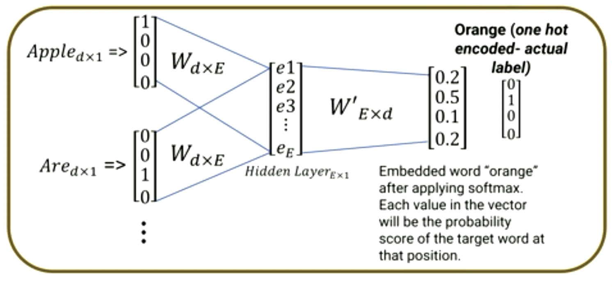
- Uses a single hidden layer, which allows the embedding of a word.
- Input vectors have the size of context,
- In CHOW the dimensions of the hidden layer and the output layer are always the same.
- First weight \(d \times E\):
- d
- dimension of one-hot encoded word
- E
- embedding size
- What's the desirable size to vectorize each word of the corpus?
- Size of \(E\) is also a hyperparameter. It's much smaller than \(d\).
- Use weight matrix to embed word after it's trained by neural network.
- Multiply word by word matrix W, results gives us the embedded word.
- Hidden layer will be calculated from average element wise-multiplication of each input vector for weights parameter \(w\).
- Need to maximize a lot of likelihood by optimizing the parameters via backpropagation
- Typically minimize negative log-likelihood instead of maximizing the original likelihood
6.2.6. Algorithm 2: Skip-Gram model
- Given a center word, what could be the context (neighbours) of the center word?
- Opposite of CBOW.
- Example:
orange ___ fruit - Can I predict the blanks by a window size?
- Window size is the hyperparameter
- To find and maximize: \(P(\text{context | orange})\).
- Skipgram
- Input layer: center word, i.e. "orange"
- Output layer: the probability vector that is the prediction of all context words for each output context word.
- Calculate softmax probability
- Next, in loss function, minimize the negative log likelihood over all softmax context words.
- Use a cross-entropy loss as we treat this problem as a classification problem.
6.2.7. Main differences between CBOW and Skip-gram
- CBOW learns better syntactic relationships between words; Skipgram captures better semantic relationships.
- CBOW would provide cats and cants as similar, while skipgram will provide cats and dogs as similar.
- CNOW is trained to predict (i.e., maximize the probaility) of a single word from a fixed window size of context words, while Skip-gram does the opposite and strives to predict several context words from a single input word.
- CBOW is faster to train vs. Skip-gram.
7. Week 9: Convolutional Neural Networks and Recurrent Neural Networks
Module 7
7.1. CNN and Deep Learning I
- Deep learning is a network that contains several hidden layers
- Without convolution, input data (e.g. images) are fed into network in raw format.
- If we use fully connected (FC) layers to created hidden layers, it will create a very large number of parameters.
- Model is thus complex and not generalizable. → Over-fitted.
- 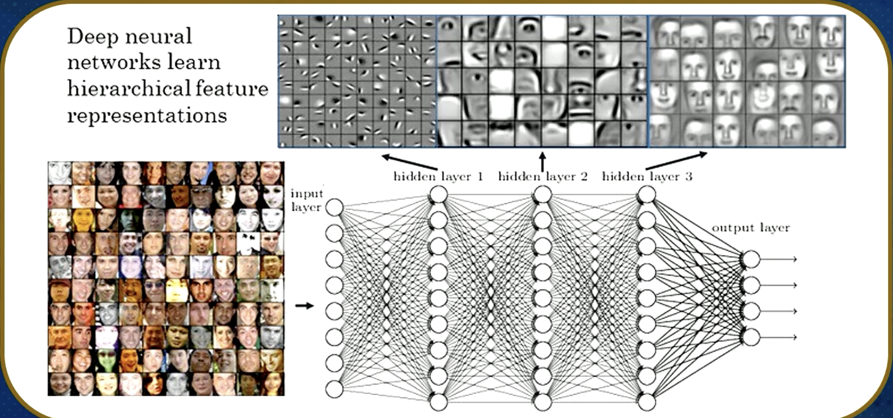 - There are 3 hidden layers
- First hidden layer created on the linear combination of input neurons that pass into an activation function.
- Typically, initial layers identify light vs dark pixels, edges, and simple shapes.
- Second layer is constructed on linear combinations of the first hidden layer (i.e. linear combination of the input neurons), which helps model to learn a more complex structure.
- Middle layers generally responsible for more complex shapes and objects.
- Final layers responsible for detecting main objective, or goal of the network. In the pictured example → human face.
- Question:
- can we reduce number of parameters?
- can some parameters be shared between different features or routes?
7.1.1. Example: learning an image
- Some patterns are much smaller than the whole image.
- Main goal is to construct network that can learn an bird's beaks.
- Model: a type of beak detector in a converged (i.e. in a fully connected layer, the convulational layer).
- Consider each pixel a neuron. Remove the regional and local dependency among the features
- In the big detector network, need to be aware of the surrounding features of pixels to accurately determine if an image has a beak or not.
- Looking at one pixel at a time requires network to have many parameters to initially find the local relationship between pixels to figure out whether there's a beak.
- Can we help the network by providing the local relationship in advance?
- Simple = using fewer parameters to come up with a beak detector
7.1.2. Why does CNN work well for images
- Introducing small regions to a network instead of pixel by pixel, how is network going to learn?
- Small region (or bigger detectors) are commonly known as kernels. These are filters.
- There will be various filters that detect different shapes or types of bird beaks.
- Logically, one filter can't tag all types of bird beaks. E.g. sparrows and doves both have beaks but they are different types of shapes.
- Therefore, need to introduce several filters that detect different types, or shapes, of bird beaks.
- These filters or kernels will be model parameters that need to be learned.
- Can we use CNN for documents too?
- Yes.
- However, need to prepare data and create a matrix that's compatible with CNN model.
- E.g. if we have 3 sample data points:
Wafa and Mahdi teach NLP classNLP is neatCNN is a good model
- Vocabulary vector has 12 unique words
- Longest document has 6 words; CNN needs all datapoints (documents) to have the same size.
- Use zero-padding to make them the same size.
- Use encoding technique to convert every word to vector, e.g. One-Hot Encoding or Word2Vec.
- Next, convert the document or sentence to a matrix.
- Create matrix with the size of 6 x 12
- Rows are the number of words
- Columns are created based on vector encoding technique.
7.2. CNN and Deep Learning II
Module 7 L1 T2
- Going over convolutional part and prediction part of the deep learning model
- All documents have the same size and are converted to the matrix form
- Can start feeding them into CNN model
- CNN is a neural network with:
- Some convolutional layers
- And some other layers
7.2.1. Convolution vs Fully connected
- A convolutional layer has several filters that do the convolutional operation.
- This means that filters need to slide over the input matrix and do a dot product operation
- E.g. if input data is 6x6:
- Using ANN approach with fully connected layers, we need to consider each element as a feature or neuron.
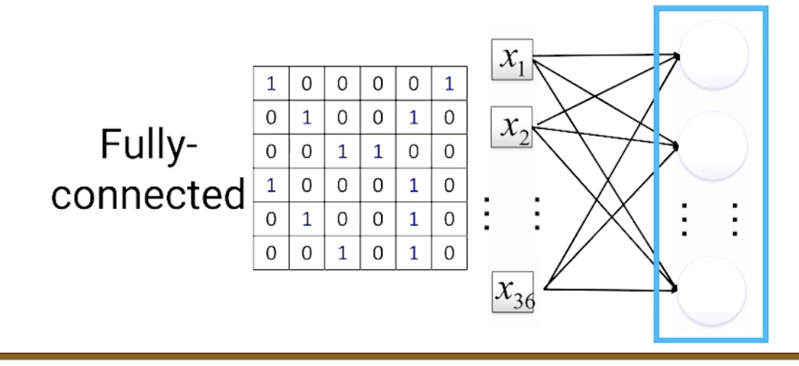
- Each element of the matrix is a feature or neuron. First hidden layer has the same number of neurons as inputs. Edges between input layer and 1st hidden layer will create 36x36 parameters.
- Increases chance of overfitting as model is more complex.
- To use CNN, we simplify it to 18 parameters. 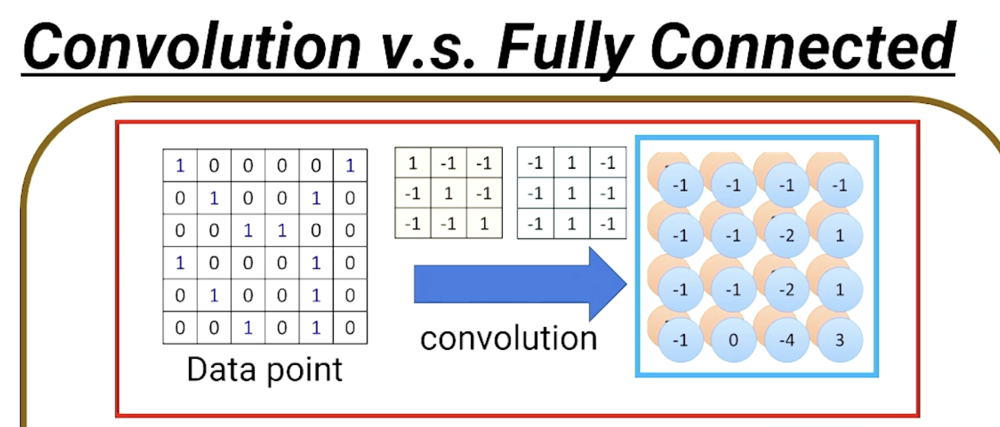
- Typically, 3x3 or 5x5 filters are used.
- The number of filters is a hyperparameter
- Field values are randomly initialized at first, then optimized via backpropagation, similar to ANN.
- Each iteration of the filter is a sum-product such as:
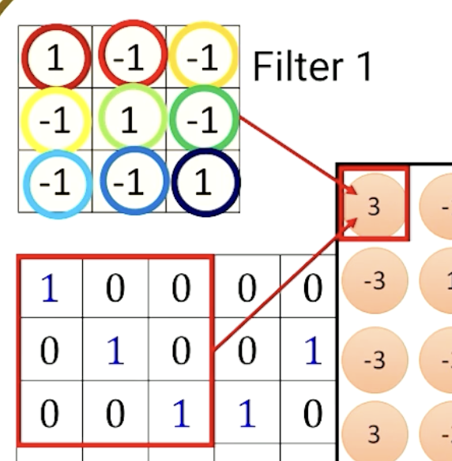
Where it starts from the top left and the result is a scalar number.
- Each neuron is thus connected to 9, instead of 36 neurons.
- Parameter sharing since the filter (e.g. Filter 1) is shared among all the strides and different 9 squares in the input document
- Max pooling: new matrices are generated from the original one, e.g.: 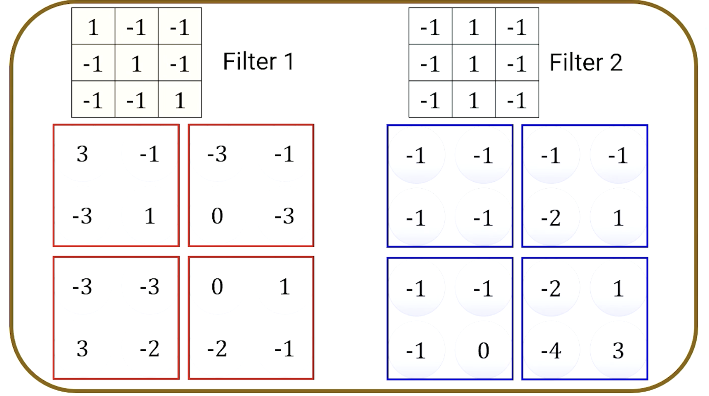 Commonly, 2x2 is used for max pooling
- 6x6 matrix → convolution → max pooling → new, smaller document is thus generated, a 2x2 document with 2 channels. Each channel is a filter.
- Using ANN approach with fully connected layers, we need to consider each element as a feature or neuron.
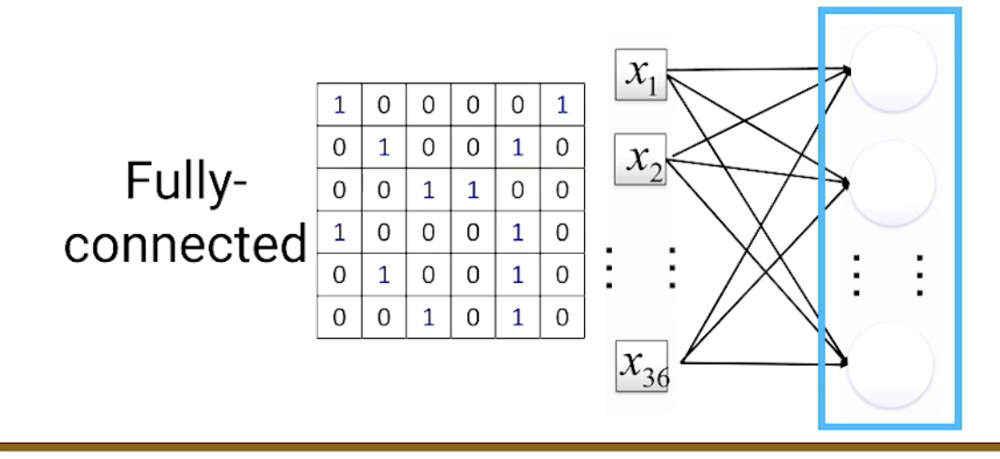
7.2.2. The whole CNN
- After initial input, convolution and max pooling, a new smaller image is generated, with the number of channels being the number of filters.
- This new image can thus be used again in the next step of the CNN process, and this can be repeated many times.
- Convolution is "feature engineering" of CNN process. New smaller image generated creates a richer input that contains more information.
- Next step is to flatten the matrix and proceed to the last layer of the neural network which defines the objective of the network.
- Each 2x2 matrix of 2 channels is then made into a single-column vector and fed into the a fully connected feedforward network
- This can be sentiment analysis, for example.
- Backpropagation is also used here.
7.2.3. CNN in Keras
All these tasks can be done in packages like Keras or Pytorch. 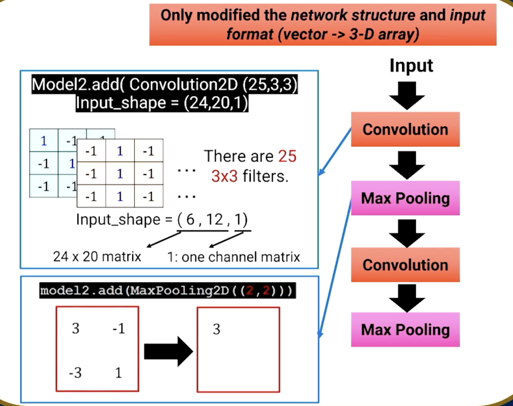
7.3. Recurrent neural networks Part I
M7 T2 L1
- RNN has concept of sequence, unlike CNN which does not.
- CNN only considers the local region of input data, but does not have concept of 'time'.
- RNN was created as there were issues in feedforward NN, such as CNN, which cannot handle memorize previous inputs, only considers the current inputs.
- Solution is RNN, which can memorize previous input data due to their internal memory.
7.3.1. Name Entity Recognition
- For document:
Mahdi and Wafa teach NLP - NER model will detect whether each word is a person or not. Model needs to take each word into consideration.
- First, encode each word into a vector, using methods such as:
- GloVe
- One Hot Encoding
- Word2Vec
- Very important to pay attention to the size of vectors and matrices. Definitions:
- x
- word. vector of length d.
- word
- d-dimensional vector (\(x \in R^d\))
7.3.2. Recap of feed-forward networks
Such as ANN, CNN.
- Each word has d elements, input has d neurlas.
- Add a neuron to handle bias term
- Do linear combination in hidden layers with activation function.
7.3.3. Simplifying this for RNN
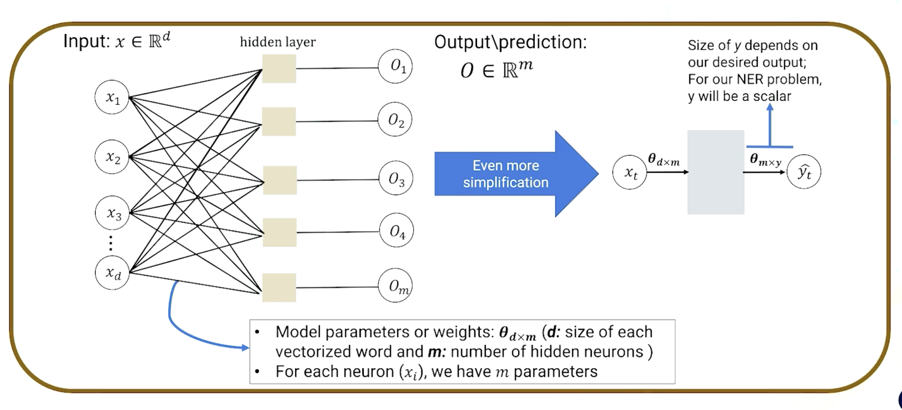
- Need NER for every single word.
- Output prediction for each word is \(\hat{y_t}\)
7.4. Recurrent neural networks Part II
M7 T2 L2
- Previously: created a feed-forward network and represented with compact visualization. Example problem is NER task for a sentence
Mahdi and Wafa teach NLP.
7.4.1. RNN
- As there are 5 words, we need to construct 5 similar feedforward network for each word.
- Compact visualization was previously shown in a horizontal view.
- Turning it to a vertical view, we can visualize it for all feed-forward units
- \(m\) is the number of hidden neurons, a hyperparameter that needs to be optimized.
- 2 different sets of parameters:
- Input to hidden layers \(\theta^1_{d\times m}\)
- Hidden layers to output \(\theta^2_{m \times y}\)
- All feedforward networks are isolated and not connected to each other. How to connect them sequentially?
- Use a hidden neuron, e.g. \(h_0\). this also needs \(\theta^3_{m\times m}\)
- We introduced a new set of parameters \(\theta^3_{m\times m}\) which generates a new vector of hidden neurons \(h_t\) with size \(m\).
- thetas with 1, 2, 3 are shared among all networks.
- The total number of parameters learned does not depend on the total number of words. Instead, it is: \[ d \times m + d \times y + m \times m \]
- As each document may contain a different number of works, it will be inefficient to create a RNN for each document.
- In practice, zero-padding is used to construct 1 RNN for all input documents with different sizes.
- If the difference between max, min length document, we instead use bucketing to make this more efficient, and create RNN for each bucket.
- in Keras, call
SimpleRNN
7.4.2. Forward pass: how to calculate past memory (h) in RNN
- \(\theta^1\)
- weight (parameter) matrix associated with input data
- \(\theta^2\)
- weight (parameter) matrix associated with output data
- \(\theta^3\)
- weight (parameter) matrix associated with hidden state
\[ h_t = f(x_t, h_{t-1}, \theta) \]
- \(h_t\)
- activation function such as tanh
- \(x_t\)
- input
- \(h_{t-1}\)
- past memory (previous step)
- \(\theta\)
- model parameters (weight)
e.g.:
\[ h_t = \tanh (x_t\theta^1 + h_{t-1}\theta^3 + b) \]
- \(x_t \theta^1\)
- output is vector of size \(m\)
- \(h_{t-1} \theta^3\)
- output is vector of size \(m\)
- \(b\)
- bias, also vector of size \(m\)
7.4.3. Forward pass: how to calculate output of each step in RNN
Output of each step is \(\hat{y}\) \[ \hat{y_t} = \text{softmax}(h_t \theta^2) \] where:
- softmax
- scales the output between 0 and 1
- \(h_t \theta^2\)
- output will be scalar for the NER problem
7.4.4. Backpropagation through time (BPTT)
- 5 words means 5 loss functions for each RNN unit.
- Total loss comes from both forward pass and backpropagation from each unit locally.
- Summation of loss functions = total loss.
- Backpropagation: move backwards from each local part to optimize parameters.
- When backpropgation paths of 2 local loss functions intersect, they need to be summed up
7.4.5. Different RNN models
- One-to-many
- used for text generation, image captions
- Many-to-one
- used for sentiment analysis
- Many-to-many
- used for speech tagging, NER, translation, forecasting
7.4.6. Problems with RNN
Forward pass, backpropagation and repeated gradient computation can lead to 2 issues.
- Exploding gradient
High gradient values lead to very different weights in each optimization iteration.
Solution: use gradient clipping, where a gradient is clipped when it goes higher than a threshold.
- Vanishing gradient
Lower gradient values that stall a model from optimizing parameters.
May suffer from short-term memory for a long sentence where words of interest may be placed far apart from each other in a sentence.
Solution: ReLu activation function, LSTM, GRU (different architectures), better weight initialization.
8. Week 10: Long-Short Term Memory and Gated Recurrent Units
Module 8
8.1. LSTM Part I
8.1.1. Why?
- NLP is sequential
- RNN suffers from short term memory
- Due to vanishing gradient
- Can't keep track of earlier phrases
8.1.2. Gated cell: LSTM
- Main concept:
- Add a gate to RNN unit to control the information that's passed through the network
- LSTM augments RNN unit by creating gates
- that allow some information to be passed through
- and some other information to be forgotten
- LSTM is the leading algorithm used in sequential modelling
8.1.3. Different representation of RNN
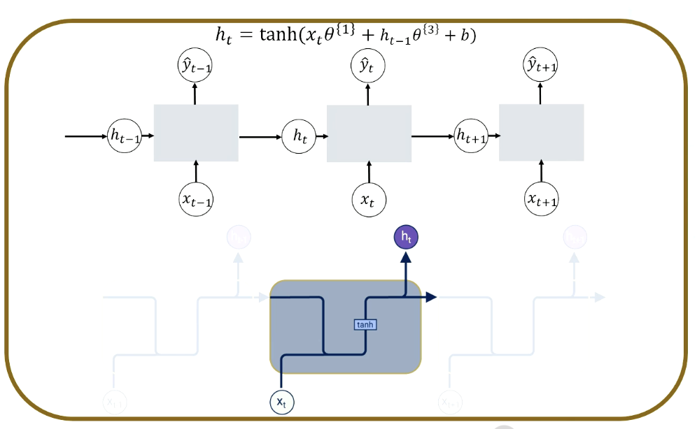
- \(h_t\): hidden state or past memory
- Lines are merging into each other
- i.e. concatenated
- Lines are splitting
- i.e. copied over
8.1.4. Simple representation of LSTM
- Each line carries a vector from output of one node to input of another
- Example of vector:
- Word
- Hidden state
8.1.5. The cell state in LSTM
- \(c_t\)
- cell state vector (from old time stamp to new time stamp). LSTM structure beneath cell state can remove or add information to the cell state.
8.1.6. How LSTM controls information removal and additional for a cell state
- Gate here is the sigmoid operator (pointwise operation)
- Sigmoid layer scales numbers in \([0,1]\).
- 0: nothing is let through
- 1: all information is let through (i.e. addition)
8.2. LSTM Part II
8.2.1. Forget gate
- Determines the information to remove or throw away from the cell state. 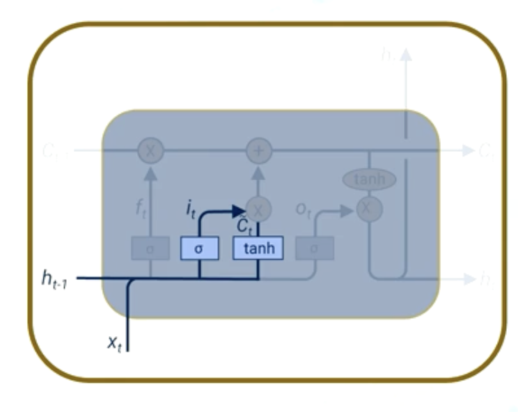
- Input gate layer
- Once \(i_t\) and \(\hat{C_t}\) are calculated, multiply them together in a pointwise operation.
- The input gate's activation vector (\(i_t\)) decides which information is important to keep from the cell input activation factor (\(\hat{C_t}\)).
- Updating old cell state
- Calculated \(f_t\) in forget gate layer stack
- This is how much info is kept or thrown away
- Update cell state based on input vector (\(i_t * \hat{C_t}\)) pointwise
- Calculated \(f_t\) in forget gate layer stack
- Calculate output of current stack (\(h_t\)) based on new \(C_t\)
- Pass previous hidden state and current input into sigmoid function (sigmoid is \(O_t\))
- Pass updated state to hyperbolic tangent function (pointwise multiplication of tanh and sigmoid output)
- Output is new hidden state
- New cell state and new hidden are carried to new time step
8.2.2. Gated Recurrent Units
- GRU
- Update to LSTM
8.3. Attention-based LSTM
and Encoder-Decoder architecture
8.3.1. Common uses of encoder-decoder architecture
- Language translation, e.g. from English to Polish
- e.g. Sequence to sequence models in NLP
8.3.2. RNN and LSTM units
- LSTM augments RNN units
- By creating gates that allow some information to be passed on, and some to be forgotten
8.3.3. In language translation
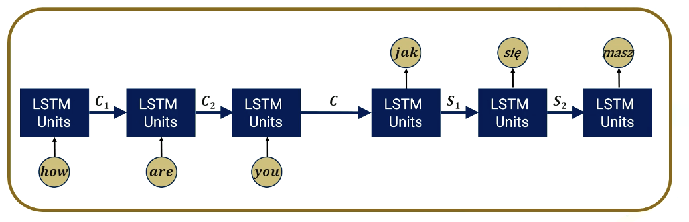 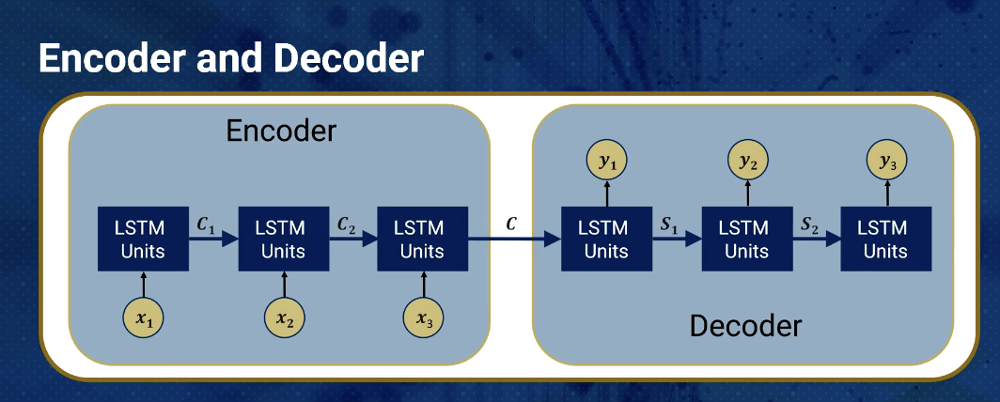
- Inputs are provided first, then outputs can be generated
- Encoder is single-layer LSTM; has input sequence "how", "are", "you"
- Definitions:
- \(C_i\)
- encoder state
- \(C\)
- final encoder state that is sent to decoder
- \(S_i\)
- decoder state
- \(y_i\)
- network outputs
- Decoder is also single-layer LSTM
- Does \(C\) have access to all information in encoder for all inputs?
- We need to make sure decoder has all the information that's sent to encoder
- Maybe not! Encoding step needs to represent entire input sequence
- All information must be compressed to \(C\)
- Very complex to ask model to get all information from this single vector \(C\) (which has cell state information passed)
- Must use very deep LSTM units (many cell state parameters – high computation time – or use new structure for such models)
8.3.4. Attention mechanism
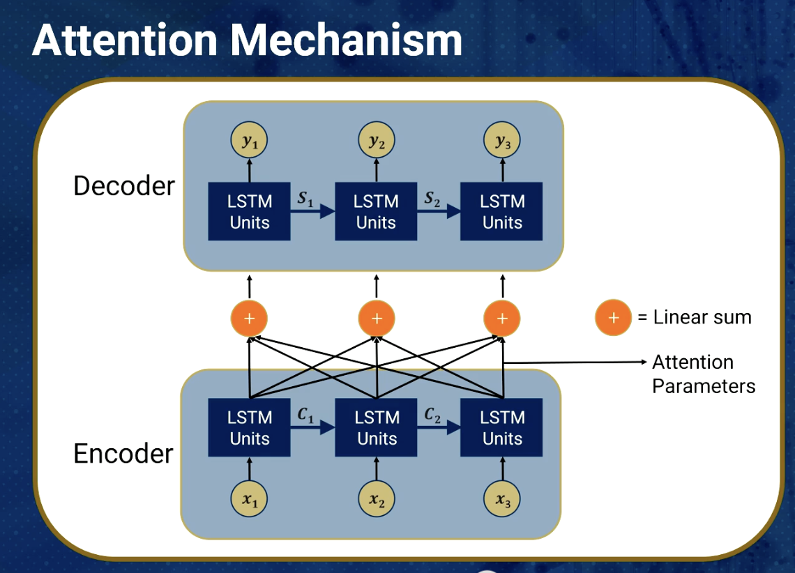
- In simple encoder-decoder architecture (not attention-based)
- Decoder makes prediction by looking only at the final output of the encoder step, which has condensed information denoted \(R_c\), or context vector
- Attention-based architecture:
- Attends every hidden state from each encoder node at every time and step
- Then makes predictions after deciding which one is more informative
8.3.5. Need to know weights associated with each attention
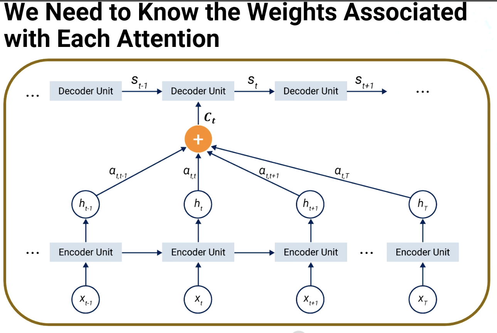
- Terminology
- \(h\) math notation
- output of each LSTM unit
- \(T\)
- number of words in sequence
- \(t\)
- current word that we're translating (\(x_t\))
- \(C_t\)
- current word context vector
- \(\alpha\)
- weight vector
- \(h_t\)
- encoder hidden state
- \(S_{t-1}\)
- previous decoder output or hidden state
- Recall: simple encoder-decoder: the last state of the encoder is used for the context vector
- In attention-based architecture:
- Embeddings of all the words in the inputs are used instead.
- These are represented by hidden states
- But, do not want to equally contribute all the hidden states to generate context vector
- As some words may be more related to final translation
- Hence, calculate \(\alpha\) as weight vector to consider each hidden state's contribution to the current word context vector
- Screenshot shows calculation of only 1 set of state at timestamp \(t\).
- Need to do the same process for all other timestamps to calculate their cell states, e.g. \(c_{t-1}\), \(c_{t+1}\), etc.
- Raw alignment score (\(e\)) is calculated using feedforward neural network with a single hidden layer
- Inputs are \(h_t\) and \(S_{t-1}\)
- General practice: add or concatenate 2 hidden states, then feed into neural network
- Single hidden layer uses \(\tanh\) activation function to produce hidden layer neurons
- Finally, a linear layer with 1 neuron (or a linear combination transformation) is used to prduce raw alignment score
- Process produces a raw score (\(\alpha_{t,t}\)) for just the current timestamp and the chosen encoder hidden state (\(h_t\)).
- Repeat for all other hidden input states, to calculate raw score using the same neural network
- Next, all raw scores passed through softmax to produce normalized scores (or $α$s).
- Weighted sum of all hidden state using their \(\alpha\) values will produce the current context vector (\(C_t\))
- Now, with the same context vector, we can calculate the output of the encoder-decoder unit (similar to LSTM)
- Again, this is only for the current context vector (\(c_t\)). Need to repeat for context vectors for different timestamps e.g. \(c_t\), \(c_{t+1}\) and so on.
- This is additive attention, and is commonly used in sequence to sequence models like LSTM